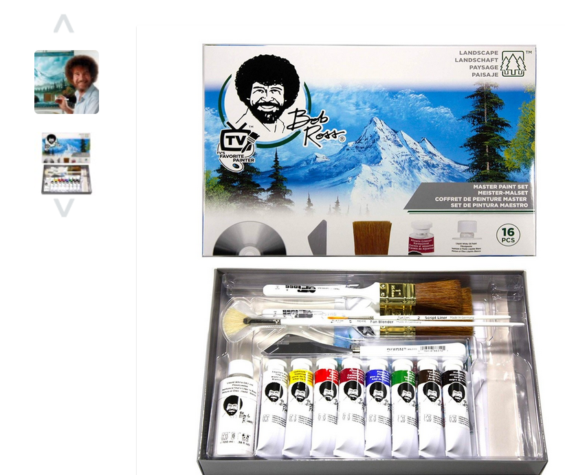

Glossary¶
Agency Problem:
The agency problem is a conflict of interest inherent in any relationship where one party is expected to act in another’s best interests. In corporate finance, the agency problem usually refers to a conflict of interest between a company’s management and the company’s stockholders. [‘Windows OS’, ‘Kubernetes?’, ‘Jira/Confluence?’]
 ¶
¶
COG
What are Cloud Optimized GeoTIFFs (COGs)?
A Cloud Optimized GeoTIFF (COG) is a GeoTIFF file with an internal organization that enables more efficient workflows in the cloud environment. It does this by leveraging the ability of clients issuing HTTP GET range requests to ask for just the parts of a file they need. Geek Hint: Use rio info and gdalinfo to see the innards of a COG and the overviews associated with a COG. For more info talk to THE GOOGLE.
Data Lake
Data Wrangling
Transferring, organizing, reprojecting, verifying, locating, formatting, netcdf, geotiff, hdf, ascii, json, mtl, xml, storage, costs
Downloading, portaling, machine-to-machining, researching, refreshing, forward-processing
DataOps
DataOps is an automated, process-oriented methodology, used by analytic and data teams, to improve the quality and reduce the cycle time of data analytics. While DataOps began as a set of best practices, it has now matured to become a new and independent approach to data analytics. - Cassandra Ladino USGS ACIO has experience in DataOps
What is DataOps?
DataOps is a collection of technical practices, workflows, cultural norms, and architectural patterns that enable:
- Rapid innovation and experimentation, delivering new insights to customers with increasing velocity
- Extremely high quality and very low error rates
- Collaboration across complex arrays of people, technology, and environments
- Clear measurement, monitoring and transparency of results
Dark Repository
DevOps
DevOps Model Defined
DevOps is the combination of cultural philosophies, practices, and tools that increases an organization’s ability to deliver applications and services at high velocity: evolving and improving products at a faster pace than organizations using traditional software development and infrastructure management processes. This speed enables organizations to better serve their customers and compete more effectively in the market. https://aws.amazon.com/devops/what-is-devops/
focused and diffuse thinking
In her book A Mind for Numbers, Barbara Oakley calls these two different ways of approaching a problem “focused thinking” and “diffuse thinking.” She claims that both of them are crucial for analytical and creative thinking, and that switching between the two modes is a great way to get unstuck when you’re facing a difficult problem. Diffuse thinking happens when you let your mind wander freely, making connections at random. The diffuse mode of thinking does not happen in any one area of the brain, but rather all over. The challenge for all is to cultivate an efficient state of mind, depending on what we wish to accomplish.
docker

Imposter Syndrome:
Imposter syndrome can be defined as a collection of feelings of inadequacy that persist despite evident success. ‘Imposters’ suffer from chronic self-doubt and a sense of intellectual fraudulence that override any feelings of success or external proof of their competence
Jupyter (Notebook and Hub)
open source software
What is open source software? Open source software is software with source code that anyone can inspect, modify, and enhance.
“Source code” is the part of software that most computer users don’t ever see; it’s the code computer programmers can manipulate to change how a piece of software—a “program” or “application”—works. Programmers who have access to a computer program’s source code can improve that program by adding features to it or fixing parts that don’t always work correctly. What’s the difference between open source software and other types of software?
Some software has source code that only the person, team, or organization who created it—and maintains exclusive control over it—can modify. People call this kind of software “proprietary” or “closed source” software.
Only the original authors of proprietary software can legally copy, inspect, and alter that software. And in order to use proprietary software, computer users must agree (usually by signing a license displayed the first time they run this software) that they will not do anything with the software that the software’s authors have not expressly permitted. Microsoft Office and Adobe Photoshop are examples of proprietary software. here
PANGEO
STAC
STAC is a standardized way to expose collections of spatial temporal data. … It can be used for external access to your holdings, exposing your information to search engines and to a growing ecosystem of tools.
“So STAC itself has no aim to provide one single index, but to encourage the basic unit of information from which a variety of indexes can be built. For STAC that basic unit is the actual geospatial asset and a JSON description of the core fields. This mirrors the design of the web as a whole: html pages are the basic unit of information, and companies like Google build the global search index. Creating a great geospatial search index is left to others to innovate on, but the STAC spec aims to encourage software implementations and data providers to expose their holdings in a way that everyone can understand.” - Chris Holmes
Chris Holmes Product Architect @ Planet, Board Member @ Open Geospatial Consortium, Technical Fellow @ Radiant.Earth – Chris’s medium articles contain well-written descriptuions of these cloud optimized ecosystems that can be exploited to simplify science.
terraform
Terraform is an open-source infrastructure as code software tool created by HashiCorp. Users define and provision data center infrastructure using a declarative configuration language known as HashiCorp Configuration Language, or optionally JSON. Terraform manages external resources with “providers”
terraform creates infrastructure out of thin air - terraform allows tony to feel like Bob Ross painting infrastucture “lets have a nice litte server here … next to our little network here and a lovely little data bucket over there.”
$ scp bob_ross.PNG ubuntu@`resolv hweb`:.

Yak Shaving
Yak shaving refers to a task, that leads you to perform another related task and so on, and so on — all distracting you from your original goal. This is sometimes called “going down the rabbit hole.”
Donavon West
American Express Developer Relations